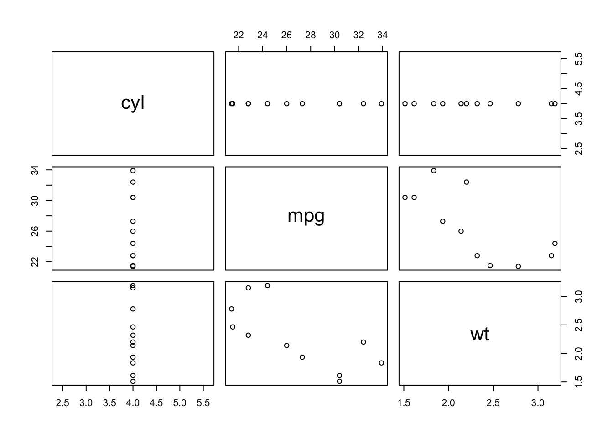
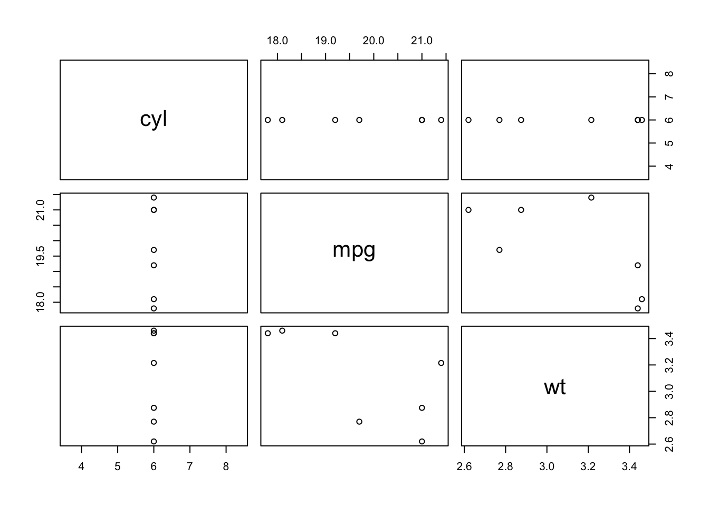
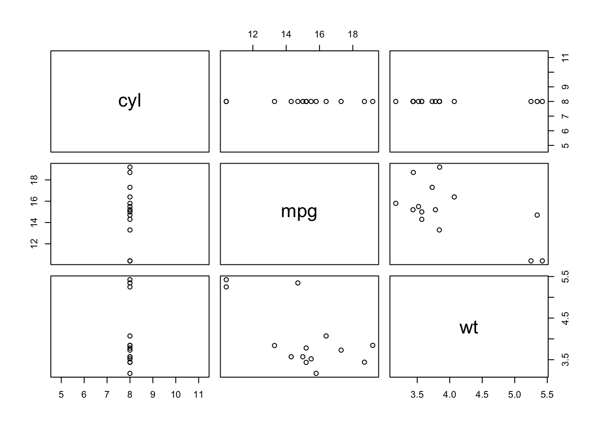

Iteration, Iteration, Iteration, Iter
Learning objectives
- Understand when and why to iterate code
- Be able to start with a single use and build up to iteration
- Use for loops, apply functions, and purrr to iterate
- Be able to write functions to cleanly iterate code
Once Twice Thrice in a Lifetime
And you may find yourself
Behind the keys of a large computing machine
And you may find yourself
Copy-pasting tons of code
And you may ask yourself, well
How did I get here?

It’s pretty common that you’ll want to run the same basic bit of code a bunch of times with different inputs. Maybe you want to read in a bunch of data files with different names or calculate something complex on every row of a dataframe. A general rule of thumb is that any code you want to run 3+ times should be iterated instead of copy-pasted. Copy-pasting code and replacing the parts you want to change is generally a bad practice for several reasons:
- it’s easy to forget to change all the parts that need to be different
- it’s easy to mistype
- it is ugly to read
- it scales very poorly (try copy-pasting 100 times…)
Lots of functions (including many base functions) are vectorized, meaning they already work on vectors of values. Here’s an example:
x <- 1:10
log(x)## [1] 0.0000000 0.6931472 1.0986123 1.3862944 1.6094379 1.7917595 1.9459101 2.0794415 2.1972246
## [10] 2.3025851The log() function already knows we want to take the log of each element in x, and it returns a vector that’s the same length as x. If a vectorized function already exists to do what you want, use it! It’s going to be faster and cleaner than trying to iterate everything yourself.
However, we may want to do more complex iterations, which brings us to our first main iterating concept.
For Loops
A for loop will repeat some bit of code, each time with a new input value. Here’s the basic structure:
for(i in 1:10) {
print(i)
}## [1] 1
## [1] 2
## [1] 3
## [1] 4
## [1] 5
## [1] 6
## [1] 7
## [1] 8
## [1] 9
## [1] 10You’ll often see i used in for loops, you can think of it as the iteration value. For each i value in the vector 1:10, we’ll print that index value. You can use the i value more than once in a loop:
for (i in 1:10) {
print(i)
print(i^2)
}## [1] 1
## [1] 1
## [1] 2
## [1] 4
## [1] 3
## [1] 9
## [1] 4
## [1] 16
## [1] 5
## [1] 25
## [1] 6
## [1] 36
## [1] 7
## [1] 49
## [1] 8
## [1] 64
## [1] 9
## [1] 81
## [1] 10
## [1] 100What’s happening is the value of i gets inserted into the code block, the block gets run, the value of i changes, and the process repeats. For loops can be a way to explicitly lay out fairly complicated procedures, since you can see exactly where your i value is going in the code.
You can also use the i value to index a vector or dataframe, which can be very powerful!
for (i in 1:10) {
print(letters[i])
print(mtcars$wt[i])
}## [1] "a"
## [1] 2.62
## [1] "b"
## [1] 2.875
## [1] "c"
## [1] 2.32
## [1] "d"
## [1] 3.215
## [1] "e"
## [1] 3.44
## [1] "f"
## [1] 3.46
## [1] "g"
## [1] 3.57
## [1] "h"
## [1] 3.19
## [1] "i"
## [1] 3.15
## [1] "j"
## [1] 3.44Here we printed out the first 10 letters of the alphabet from the letters vector, as well as the first 10 car weights from the mtcars dataframe.
If you want to store your results somewhere, it is important that you create an empty object to hold them before you run the loop. If you grow your results vector one value at a time, it will be much slower. Here’s how to make that empty vector first. We’ll also use the function seq_along to create a sequence that’s the proper length, instead of explicitly writing out something like 1:10.
results <- rep(NA, nrow(mtcars))
for (i in seq_along(mtcars$wt)) {
results[i] <- mtcars$wt[i] * 1000
}
results## [1] 2620 2875 2320 3215 3440 3460 3570 3190 3150 3440 3440 4070 3730 3780 5250 5424 5345 2200
## [19] 1615 1835 2465 3520 3435 3840 3845 1935 2140 1513 3170 2770 3570 2780apply Functions
R includes another way to iterate, using the apply family of functions. These functions all do the same basic thing: take a series of values and apply a function to each of them. That function could be a function from a package, or it could be one you write to do something specific.
Here we’ll use sapply, which will return the simplest form it can. Since we give it a vector, it’ll give us back a vector.
sapply(1:10, sqrt)## [1] 1.000000 1.414214 1.732051 2.000000 2.236068 2.449490 2.645751 2.828427 3.000000 3.162278This is not a useful example, since sqrt is vectorized already- we could just call sqrt(1:10) and get the same result. However, where apply functions become useful is when we want to do something more complicated.
Oftentimes, the translation from a for loop to apply is this:
- take the code from inside your for loop
- turn it into a generalized function
- use
applyto apply that function across the range of values you want
Let’s do this for a simple example. First our for loop:
result <- rep(NA, 10)
for (i in 1:10) {
result[i] <- sqrt(i) / 2
}
result## [1] 0.5000000 0.7071068 0.8660254 1.0000000 1.1180340 1.2247449 1.3228757 1.4142136 1.5000000
## [10] 1.5811388We’ll use what’s called an “anonymous function”, which is a function that we only define within the call to sapply. With a simple function like sqrt(x)/2, it’s easier to use an anonymous function than write a whole new function.
sapply(1:10, function(x) sqrt(x)/2)## [1] 0.5000000 0.7071068 0.8660254 1.0000000 1.1180340 1.2247449 1.3228757 1.4142136 1.5000000
## [10] 1.5811388Notice that the code here is cleaner and we didn’t have to create a result vector to store the output. If we wanted to save our output, we could assign it to an object.
With the apply family of functions, you can also pass other arguments to the functions you apply. Here we’ll try applying mean to a dataframe with some missing values.
mtcars_na <- mtcars
mtcars_na[1, 1:4] <- NA
sapply(mtcars_na, mean)## mpg cyl disp hp drat wt qsec vs am
## NA NA NA NA 3.596563 3.217250 17.848750 0.437500 0.406250
## gear carb
## 3.687500 2.812500sapply(mtcars_na, mean, na.rm = T)## mpg cyl disp hp drat wt qsec vs
## 20.061290 6.193548 233.003226 147.870968 3.596563 3.217250 17.848750 0.437500
## am gear carb
## 0.406250 3.687500 2.812500purrr
If you’ve been digging the tidyverse, well rest assured, they’ve got some slick iteration functions too! The map series of functions work very similarly to the apply functions, but they’re a bit more tidyverse-friendly and allow you to more explicitly say what kinds of values you want returned.
For a wonderful and thorough exploration of the purrr package, check out Jenny Brian’s tutorial.
map
When using the map family of functions, the first argument (as in all tidyverse functions) is the data. One nice feature is that you can specify the format of the output explicitly by using a different member of the family.
mtcars %>% purrr::map(mean) # gives a list## $mpg
## [1] 20.09062
##
## $cyl
## [1] 6.1875
##
## $disp
## [1] 230.7219
##
## $hp
## [1] 146.6875
##
## $drat
## [1] 3.596563
##
## $wt
## [1] 3.21725
##
## $qsec
## [1] 17.84875
##
## $vs
## [1] 0.4375
##
## $am
## [1] 0.40625
##
## $gear
## [1] 3.6875
##
## $carb
## [1] 2.8125mtcars %>% purrr::map_dbl(mean) # gives a numeric vector## mpg cyl disp hp drat wt qsec vs
## 20.090625 6.187500 230.721875 146.687500 3.596563 3.217250 17.848750 0.437500
## am gear carb
## 0.406250 3.687500 2.812500mtcars %>% purrr::map_chr(mean) # gives a character vector## mpg cyl disp hp drat wt qsec
## "20.090625" "6.187500" "230.721875" "146.687500" "3.596563" "3.217250" "17.848750"
## vs am gear carb
## "0.437500" "0.406250" "3.687500" "2.812500"map2
You can use the map2 series of functions if you need to map across two lists in parallel. Here, we’ll map across both the names of cars and their mpg values, using an anonymous function to paste the two together into a sentence.
map2_chr(rownames(mtcars), mtcars$mpg, function(x,y) paste(x, "gets", y, "miles per gallon")) %>%
head()## [1] "Mazda RX4 gets 21 miles per gallon" "Mazda RX4 Wag gets 21 miles per gallon"
## [3] "Datsun 710 gets 22.8 miles per gallon" "Hornet 4 Drive gets 21.4 miles per gallon"
## [5] "Hornet Sportabout gets 18.7 miles per gallon" "Valiant gets 18.1 miles per gallon"You can use the pmap series of functions if you need to use more than two input lists.
Here we’ll take a look at a cool way to use map: applying a linear model across different sets of data. We’ll take the mtcars dataset, use split to split it into a list, with one data frame for each value of cyl, and then map the same linear model to each entry in the list.
mtcars %>%
split(.$cyl) %>%
purrr::map(~ lm(mpg ~ wt, data = .x))## $`4`
##
## Call:
## lm(formula = mpg ~ wt, data = .x)
##
## Coefficients:
## (Intercept) wt
## 39.571 -5.647
##
##
## $`6`
##
## Call:
## lm(formula = mpg ~ wt, data = .x)
##
## Coefficients:
## (Intercept) wt
## 28.41 -2.78
##
##
## $`8`
##
## Call:
## lm(formula = mpg ~ wt, data = .x)
##
## Coefficients:
## (Intercept) wt
## 23.868 -2.192map_df
What if we want to do the same thing, but extract the useful information from the model object? We can use another tidyverse package, broom, and its function tidy to pull out the information from the lm model object. We’ll repeat what we did last time, but then we’ll use map_dfr to map across each model object, tidy it up, and include an id column called cyl, so we know which cylinder value the linear model terms correspond to. The “dfr” portion of map_dfr will make sure the output is a dataframe, bound together by rows. map_dfc would bind columns together into a dataframe output.
mtcars %>%
split(.$cyl) %>%
purrr::map(~ lm(mpg ~ wt, data = .x)) %>%
map_dfr(broom::tidy, .id = "cyl")## # A tibble: 6 × 6
## cyl term estimate std.error statistic p.value
## <chr> <chr> <dbl> <dbl> <dbl> <dbl>
## 1 4 (Intercept) 39.6 4.35 9.10 0.00000777
## 2 4 wt -5.65 1.85 -3.05 0.0137
## 3 6 (Intercept) 28.4 4.18 6.79 0.00105
## 4 6 wt -2.78 1.33 -2.08 0.0918
## 5 8 (Intercept) 23.9 3.01 7.94 0.00000405
## 6 8 wt -2.19 0.739 -2.97 0.0118walk
Sometimes you want to use a function for its “side effect”, such as when using the plot function. Using plot alone doesn’t return anything, but its side effect is to generate a plot. We use the exact same format as with map, but instead we use the function walk.
mtcars %>%
select(cyl, mpg, wt) %>%
split(.$cyl) %>%
walk(plot)
Conditional Statements
Sometimes, you want to do something with your code, but only if a certain condition is true. There are a couple main ways to do this.
if and else
You can use combinations of if and else to create conditional statements. Here’s a quick example:
for (i in 1:10) {
if (i < 5) {
print(paste(i, "is less than 5"))
} else {
print(paste(i, "is greater than or equal to 5"))
}
}## [1] "1 is less than 5"
## [1] "2 is less than 5"
## [1] "3 is less than 5"
## [1] "4 is less than 5"
## [1] "5 is greater than or equal to 5"
## [1] "6 is greater than or equal to 5"
## [1] "7 is greater than or equal to 5"
## [1] "8 is greater than or equal to 5"
## [1] "9 is greater than or equal to 5"
## [1] "10 is greater than or equal to 5"Here we’ve combined a couple techniques: we’ve used a for loop to go through a sequence of values, and for each value we’ve printed a statement based on a condition that our value meets.
case_when
Sometimes you might want to do a bunch conditional statements together, but typing out a ton of nested if-else statements can be unwieldy and prone to typos. A really useful function is the tidyverse’s case_when. You feed it a dataframe and then use a series of two-sited formulas where the left-hand side determines which values you want, and the right supplies the replacement value. Here’s an example where we take the mtcars dataframe and add a column called car_size. If the car’s weight is over 3.5 or it has 8 cylinders, we call it “big”. If neither of these conditions is met (denoted by TRUE), then we call it “small”.
mtcars %>%
mutate(
car_size = case_when(
wt > 3.5 | cyl == 8 ~ "big",
wt > 2.5 ~ "medium",
TRUE ~ "small"
)
)## mpg cyl disp hp drat wt qsec vs am gear carb car_size
## Mazda RX4 21.0 6 160.0 110 3.90 2.620 16.46 0 1 4 4 medium
## Mazda RX4 Wag 21.0 6 160.0 110 3.90 2.875 17.02 0 1 4 4 medium
## Datsun 710 22.8 4 108.0 93 3.85 2.320 18.61 1 1 4 1 small
## Hornet 4 Drive 21.4 6 258.0 110 3.08 3.215 19.44 1 0 3 1 medium
## Hornet Sportabout 18.7 8 360.0 175 3.15 3.440 17.02 0 0 3 2 big
## Valiant 18.1 6 225.0 105 2.76 3.460 20.22 1 0 3 1 medium
## Duster 360 14.3 8 360.0 245 3.21 3.570 15.84 0 0 3 4 big
## Merc 240D 24.4 4 146.7 62 3.69 3.190 20.00 1 0 4 2 medium
## Merc 230 22.8 4 140.8 95 3.92 3.150 22.90 1 0 4 2 medium
## Merc 280 19.2 6 167.6 123 3.92 3.440 18.30 1 0 4 4 medium
## Merc 280C 17.8 6 167.6 123 3.92 3.440 18.90 1 0 4 4 medium
## Merc 450SE 16.4 8 275.8 180 3.07 4.070 17.40 0 0 3 3 big
## Merc 450SL 17.3 8 275.8 180 3.07 3.730 17.60 0 0 3 3 big
## Merc 450SLC 15.2 8 275.8 180 3.07 3.780 18.00 0 0 3 3 big
## Cadillac Fleetwood 10.4 8 472.0 205 2.93 5.250 17.98 0 0 3 4 big
## Lincoln Continental 10.4 8 460.0 215 3.00 5.424 17.82 0 0 3 4 big
## Chrysler Imperial 14.7 8 440.0 230 3.23 5.345 17.42 0 0 3 4 big
## Fiat 128 32.4 4 78.7 66 4.08 2.200 19.47 1 1 4 1 small
## Honda Civic 30.4 4 75.7 52 4.93 1.615 18.52 1 1 4 2 small
## Toyota Corolla 33.9 4 71.1 65 4.22 1.835 19.90 1 1 4 1 small
## Toyota Corona 21.5 4 120.1 97 3.70 2.465 20.01 1 0 3 1 small
## Dodge Challenger 15.5 8 318.0 150 2.76 3.520 16.87 0 0 3 2 big
## AMC Javelin 15.2 8 304.0 150 3.15 3.435 17.30 0 0 3 2 big
## Camaro Z28 13.3 8 350.0 245 3.73 3.840 15.41 0 0 3 4 big
## Pontiac Firebird 19.2 8 400.0 175 3.08 3.845 17.05 0 0 3 2 big
## Fiat X1-9 27.3 4 79.0 66 4.08 1.935 18.90 1 1 4 1 small
## Porsche 914-2 26.0 4 120.3 91 4.43 2.140 16.70 0 1 5 2 small
## Lotus Europa 30.4 4 95.1 113 3.77 1.513 16.90 1 1 5 2 small
## Ford Pantera L 15.8 8 351.0 264 4.22 3.170 14.50 0 1 5 4 big
## Ferrari Dino 19.7 6 145.0 175 3.62 2.770 15.50 0 1 5 6 medium
## Maserati Bora 15.0 8 301.0 335 3.54 3.570 14.60 0 1 5 8 big
## Volvo 142E 21.4 4 121.0 109 4.11 2.780 18.60 1 1 4 2 mediumConditional map
Let’s throw it back to the map family for a sec. Sometimes you might only want to map a function to part of a dataframe. map_if allows you to give the data, a condition for the data to meet, and the function you want to apply to the data that meet the condition. Here, we’ll map as.character to the columns of the iris dataset that meet the condition is.factor.
str(iris)## 'data.frame': 150 obs. of 5 variables:
## $ Sepal.Length: num 5.1 4.9 4.7 4.6 5 5.4 4.6 5 4.4 4.9 ...
## $ Sepal.Width : num 3.5 3 3.2 3.1 3.6 3.9 3.4 3.4 2.9 3.1 ...
## $ Petal.Length: num 1.4 1.4 1.3 1.5 1.4 1.7 1.4 1.5 1.4 1.5 ...
## $ Petal.Width : num 0.2 0.2 0.2 0.2 0.2 0.4 0.3 0.2 0.2 0.1 ...
## $ Species : Factor w/ 3 levels "setosa","versicolor",..: 1 1 1 1 1 1 1 1 1 1 ...iris %>%
map_if(is.factor, as.character) %>%
str()## List of 5
## $ Sepal.Length: num [1:150] 5.1 4.9 4.7 4.6 5 5.4 4.6 5 4.4 4.9 ...
## $ Sepal.Width : num [1:150] 3.5 3 3.2 3.1 3.6 3.9 3.4 3.4 2.9 3.1 ...
## $ Petal.Length: num [1:150] 1.4 1.4 1.3 1.5 1.4 1.7 1.4 1.5 1.4 1.5 ...
## $ Petal.Width : num [1:150] 0.2 0.2 0.2 0.2 0.2 0.4 0.3 0.2 0.2 0.1 ...
## $ Species : chr [1:150] "setosa" "setosa" "setosa" "setosa" ...map_at does something similar, but it allows you to directly specify the locations you’d like to map the function to, using either names or positions.
mtcars %>%
map_at(c("cyl", "am"), as.character) %>%
str()## List of 11
## $ mpg : num [1:32] 21 21 22.8 21.4 18.7 18.1 14.3 24.4 22.8 19.2 ...
## $ cyl : chr [1:32] "6" "6" "4" "6" ...
## $ disp: num [1:32] 160 160 108 258 360 ...
## $ hp : num [1:32] 110 110 93 110 175 105 245 62 95 123 ...
## $ drat: num [1:32] 3.9 3.9 3.85 3.08 3.15 2.76 3.21 3.69 3.92 3.92 ...
## $ wt : num [1:32] 2.62 2.88 2.32 3.21 3.44 ...
## $ qsec: num [1:32] 16.5 17 18.6 19.4 17 ...
## $ vs : num [1:32] 0 0 1 1 0 1 0 1 1 1 ...
## $ am : chr [1:32] "1" "1" "1" "0" ...
## $ gear: num [1:32] 4 4 4 3 3 3 3 4 4 4 ...
## $ carb: num [1:32] 4 4 1 1 2 1 4 2 2 4 ...Complete Workflow
Starting With a Single Case
The first thing we’ll do is figure out if we can do the right thing once! We want to rescale a vector of values to a 0-1 scale. We’ll try it out on the weights in mtcars. Our heaviest vehicle will have a scaled weight of 1, and our lightest will have a scaled weight of 0. We’ll do this by taking our weight, subtracting the minimum car weight from it, and dividing this by the range of the car weights (max minus min). We’ll have to be careful about our order of operations…
(mtcars$wt[1] - min(mtcars$wt, na.rm = T)) /
(max(mtcars$wt, na.rm = T) - min(mtcars$wt, na.rm = T))## [1] 0.2830478Great! We got a scaled value out of the deal. Because we’re working with base functions like max, min, and /, we can vectorize. This means we can give it the whole weight vector, and we’ll get a whole scaled vector back.
mtcars$wt_scaled <- (mtcars$wt - min(mtcars$wt, na.rm = T)) /
diff(range(mtcars$wt, na.rm = T))Generalizing
Now let’s replace our reference to a specific vector of data with something generic: x.
x_scaled <- (x - min(x, na.rm = T)) /
diff(range(x, na.rm = T))Making it a Function
Now that we’ve got a generalized bit of code, we can turn it into a function. All we need is a name, function, and a list of arguments. In this case, we’ve just got one argument: x.
rescale_0_1 <- function(x) {
(x - min(x, na.rm = T)) /
diff(range(x, na.rm = T))
}Iterating!
Now that we’ve got a function that’ll rescale a vector of values, we can use one of the map functions to iterate across all the columns in a dataframe, rescaling each one. We’ll use map_df since it returns a dataframe, and we’re feeding it a dataframe.
map_df(mtcars, rescale_0_1)## # A tibble: 32 × 12
## mpg cyl disp hp drat wt qsec vs am gear carb wt_scaled
## <dbl> <dbl> <dbl> <dbl> <dbl> <dbl> <dbl> <dbl> <dbl> <dbl> <dbl> <dbl>
## 1 0.451 0.5 0.222 0.205 0.525 0.283 0.233 0 1 0.5 0.429 0.283
## 2 0.451 0.5 0.222 0.205 0.525 0.348 0.3 0 1 0.5 0.429 0.348
## 3 0.528 0 0.0920 0.145 0.502 0.206 0.489 1 1 0.5 0 0.206
## 4 0.468 0.5 0.466 0.205 0.147 0.435 0.588 1 0 0 0 0.435
## 5 0.353 1 0.721 0.435 0.180 0.493 0.3 0 0 0 0.143 0.493
## 6 0.328 0.5 0.384 0.187 0 0.498 0.681 1 0 0 0 0.498
## 7 0.166 1 0.721 0.682 0.207 0.526 0.160 0 0 0 0.429 0.526
## 8 0.596 0 0.189 0.0353 0.429 0.429 0.655 1 0 0.5 0.143 0.429
## 9 0.528 0 0.174 0.152 0.535 0.419 1 1 0 0.5 0.143 0.419
## 10 0.374 0.5 0.241 0.251 0.535 0.493 0.452 1 0 0.5 0.429 0.493
## # … with 22 more rowsThere you have it! We went from some code that calculated one value to being able to iterate it across any number of columns in a dataframe. It can be tempting to jump straight to your final iteration code, but it’s often better to start simple and work your way up, verifying that things work at each step, especially if you’re trying to do something even moderately complex.
This lesson was contributed by Michael Culshaw-Maurer, with ideas from Mike Koontz and Brandon Hurr’s D-RUG presentation.